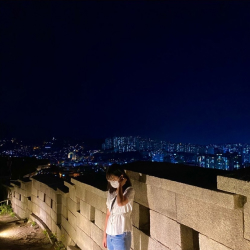

Webpulisher
Webpulisher
Portfolio
I am

안녕하세요
신입 웹퍼블리셔 이승은 입니다.
- 호기심이 많습니다
- 성실합니다
- 끊임없이 배워갑니다
- 탄탄한 마크업을 위해 계속하여 고민합니다
What can I do
-
HTML
시멘틱 태그를 적절하게 사용하며 웹표준에 맞게 작성합니다.
-
CSS
flex, grid 같은 기능을 사용하여 레이아웃을 잡으며 @media query를 통해 반응형 사이트를 만듭니다.
-
Javascript
ES6를 이해하며 플러그인 사용뿐만이 아니라 탭메뉴, 스크롤 이벤트 등을 바닐라 자바스크립트로 작성합니다
-
Sass(SCSS)
mixin, placeholder 등과 같은 기능을 사용하며 component 별로 작게 분리하여 재사용성이 용이하게 작성합니다.
Project
-
01
01
정부24
Responsive website
복잡한 레이아웃의 사이트를 만들 수 있다는 점을 보여드리기 위해 만든 사이트 입니다. 우선 기존의 사이트를 클론 디자인한 이후 코딩하여 완성했습니다. 슬라이드 플러그인 이외에는 모두 하드 코딩하여 진행한 프로젝트 입니다.
-
02
02
NH Bank
Clone website
tiny-slider 플러그인을 사용해 슬라이드를 만들었습니다. 이외의 드롭다운 메뉴, 탭메뉴는 모두 하드코딩하여 구현했습니다. Git을 통해 커밋하고 깃허브에 push 하였습니다
-
03
03
Portfolio
Portfolio website
Sass를 사용하여 컴프넌트 별로 작게 쪼개서 재사용성이 용이하게 작성한 반응형 웹사이트입니다. 스크롤 이벤트 등을 통해 인터렉티브한 웹 사이트를 만들었습니다.